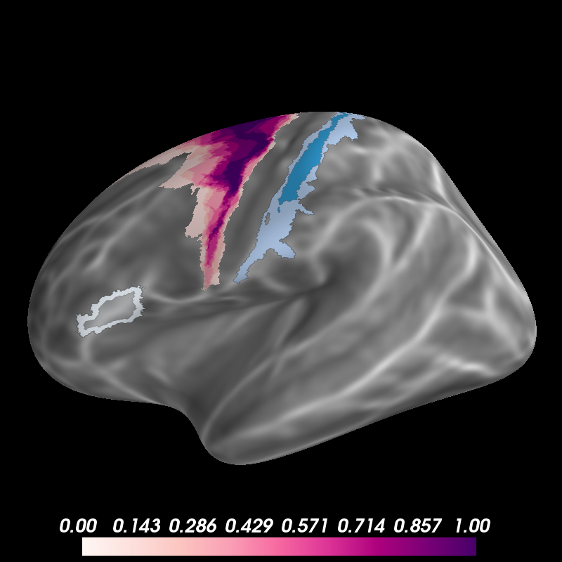

Display Probabilistic Labels¶
Freesurfer ships with some probabilistic labels of cytoarchitectonic and visual areas. Here we show several ways to visualize these labels to help characterize the location of your data.
from os import environ
from os.path import join
import numpy as np
from surfer import Brain
from nibabel.freesurfer import read_label
print(__doc__)
brain = Brain("fsaverage", "lh", "inflated")
"""
Show the morphometry with a continuous grayscale colormap.
"""
brain.add_morphometry("curv", colormap="binary",
min=-.8, max=.8, colorbar=False)
"""
The easiest way to label any vertex that could be in the region is with
add_label.
"""
brain.add_label("BA1_exvivo", color="#A6BDDB")
"""
You can also threshold based on the probability of that region being at each
vertex.
"""
brain.add_label("BA1_exvivo", color="#2B8CBE", scalar_thresh=.5)
"""
It's also possible to plot just the label boundary, in case you wanted to
overlay the label on an activation plot to asses whether it falls within that
region.
"""
brain.add_label("BA45_exvivo", color="#F0F8FF", borders=3, scalar_thresh=.5)
brain.add_label("BA45_exvivo", color="#F0F8FF", alpha=.3, scalar_thresh=.5)
"""
Finally, with a few tricks, you can display the whole probabilistic map.
"""
subjects_dir = environ["SUBJECTS_DIR"]
label_file = join(subjects_dir, "fsaverage", "label", "lh.BA6_exvivo.label")
prob_field = np.zeros_like(brain.geo['lh'].x)
ids, probs = read_label(label_file, read_scalars=True)
prob_field[ids] = probs
brain.add_data(prob_field, thresh=1e-5, colormap="RdPu")
Total running time of the script: ( 0 minutes 3.393 seconds)